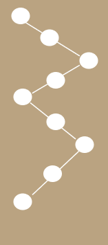

l'échantillonnage en zigzag
Tracez un chemin en zigzag à travers la parcelle
l'échantillonnage en croix
Cette technique permet de couvrir différentes parties de la parcelle de manière systématique
l'échantillonnage en réctangle
Cette technique permet de couvrir différentes parties de la parcelle de manière systématique en suivant un parcours rectangulaire

Échantillonnage aléatoire
Cette technique permet de minimiser les biais en donnant à chaque point de la parcelle une chance égale d'être sélectionné